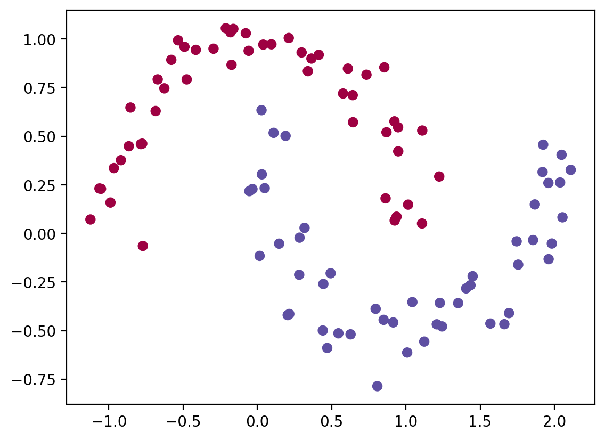
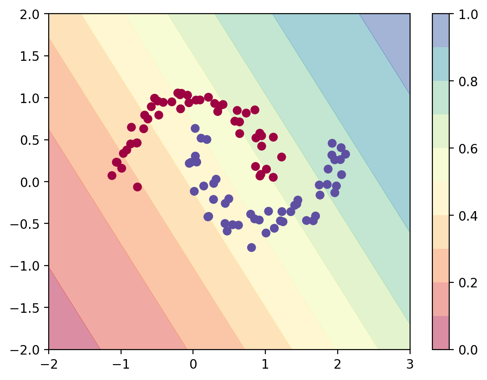
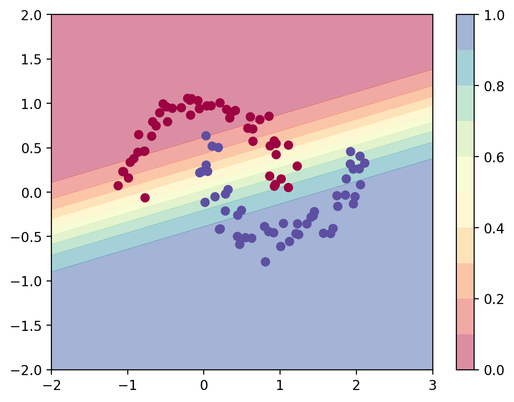
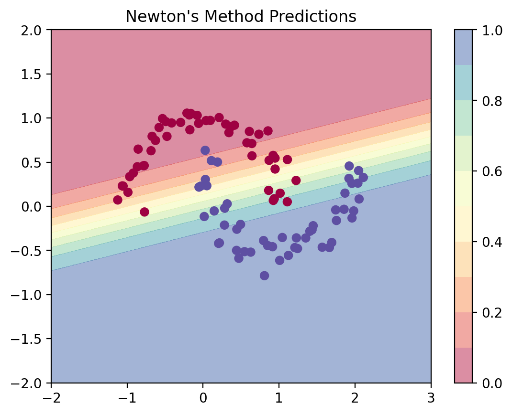
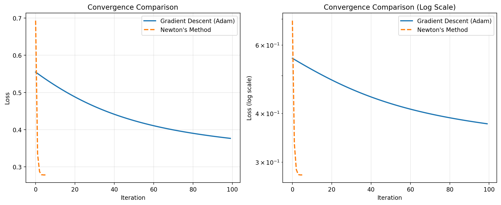

import numpy as np
import sklearn
import torch
import torch.nn as nn
import torch.nn.functional as F
import matplotlib.pyplot as plt
%matplotlib inline
%config InlineBackend.figure_format = 'retina'Second-Order Logistic Regression Torch
ML

class LogisticRegression(nn.Module):
def __init__(self, input_dim):
super(LogisticRegression, self).__init__()
self.linear = nn.Linear(input_dim, 1)
def forward(self, x):
logits = self.linear(x)
return logitsfrom sklearn.datasets import make_moonsX, y = make_moons(n_samples=100, noise=0.1)plt.scatter(X[:, 0], X[:, 1], c=y, cmap=plt.cm.Spectral)
log_reg = LogisticRegression(2)log_reg.linear.weight, log_reg.linear.bias(Parameter containing:
tensor([[0.6758, 0.4935]], requires_grad=True),
Parameter containing:
tensor([-0.3427], requires_grad=True))log_reg(torch.tensor([1, 0.0]))tensor([0.3330], grad_fn=<ViewBackward0>)# Predict with the model
def predict_plot_grid(model):
XX, YY = torch.meshgrid(torch.linspace(-2, 3, 100), torch.linspace(-2, 2, 100))
X_grid = torch.cat([XX.unsqueeze(-1), YY.unsqueeze(-1)], dim=-1)
logits = model(X_grid)
probs = torch.sigmoid(logits).reshape(100, 100)
plt.contourf(XX, YY, probs.detach().numpy(), levels=[0.0, 0.1, 0.2,0.3, 0.4,0.5, 0.6,0.7, 0.8,0.9, 1.0],
cmap=plt.cm.Spectral, alpha=0.5)
plt.colorbar()
plt.scatter(X[:, 0], X[:, 1], c=y, cmap=plt.cm.Spectral)
predict_plot_grid(log_reg)

opt = torch.optim.Adam(log_reg.parameters(), lr=0.01)
converged = False
prev_loss = 1e8
i = 0
while not converged:
opt.zero_grad()
logits = log_reg(torch.tensor(X, dtype=torch.float32))
loss = nn.BCEWithLogitsLoss()(logits, torch.tensor(y, dtype=torch.float32).view(-1, 1))
loss.backward()
opt.step()
if i%10==0:
print(i, loss.item())
if np.abs(prev_loss - loss.item()) < 1e-5:
converged = True
prev_loss = loss.item()
i = i + 10 0.6560194492340088
10 0.6222368478775024
20 0.5931639671325684
30 0.5680631995201111
40 0.546377956867218
50 0.5277280807495117
60 0.5115939974784851
70 0.4975294768810272
80 0.48514601588249207
90 0.4741223454475403
100 0.46420058608055115
110 0.4551752507686615
120 0.4468850791454315
130 0.4392036199569702
140 0.43203285336494446
150 0.4252965450286865
160 0.41893595457077026
170 0.4129054546356201
180 0.407169908285141
190 0.401701956987381
200 0.39648038148880005
210 0.3914879858493805
220 0.3867112696170807
230 0.38213881850242615
240 0.37776118516921997
250 0.3735697865486145
260 0.36955711245536804
270 0.3657160997390747
280 0.36204010248184204
290 0.3585226833820343
300 0.3551577031612396
310 0.35193902254104614
320 0.34886065125465393
330 0.3459169268608093
340 0.3431020677089691
350 0.34041059017181396
360 0.3378370702266693
370 0.3353762924671173
380 0.33302322030067444
390 0.3307729959487915
400 0.32862091064453125
410 0.3265624940395355
420 0.32459351420402527
430 0.3227096199989319
440 0.3209071457386017
450 0.3191821277141571
460 0.3175310492515564
470 0.31595054268836975
480 0.31443729996681213
490 0.31298816204071045
500 0.31160029768943787
510 0.310270756483078
520 0.30899694561958313
530 0.3077763617038727
540 0.30660656094551086
550 0.30548518896102905
560 0.30441009998321533
570 0.30337920784950256
580 0.30239057540893555
590 0.3014422655105591
600 0.3005324602127075
610 0.2996595799922943
620 0.29882189631462097
630 0.2980179190635681
640 0.29724621772766113
650 0.29650527238845825
660 0.29579389095306396
670 0.29511070251464844
680 0.2944546043872833
690 0.29382434487342834
700 0.2932189404964447
710 0.2926372289657593
720 0.29207831621170044
730 0.291541188955307
740 0.2910250127315521
750 0.2905288338661194
760 0.2900518774986267
770 0.2895933985710144
780 0.289152592420578
790 0.2887287437915802
800 0.28832119703292847
810 0.2879292666912079
820 0.2875523567199707
830 0.2871898114681244
840 0.28684115409851074
850 0.286505788564682
860 0.2861831486225128
870 0.28587281703948975
880 0.2855742573738098
890 0.2852870225906372
900 0.2850106358528137
910 0.2847447693347931
920 0.2844889760017395
930 0.2842428386211395
940 0.2840059995651245
950 0.2837781012058258
960 0.2835588753223419
970 0.2833479046821594
980 0.28314483165740967
990 0.2829494774341583
1000 0.2827615439891815
1010 0.2825806736946106
1020 0.28240662813186646
1030 0.2822391390800476
1040 0.2820780575275421
1050 0.2819230258464813
1060 0.2817738652229309
1070 0.28163033723831177
1080 0.2814922630786896
1090 0.2813594341278076
1100 0.28123167157173157
1110 0.28110870718955994
1120 0.28099048137664795
1130 0.2808767259120941
1140 0.2807673513889313
1150 0.28066208958625793
1160 0.2805609107017517predict_plot_grid(log_reg)
Second-Order Logistic Regression (Newton’s Method)
Now we’ll implement logistic regression using Newton’s method, which uses the Hessian matrix for faster convergence.
# Implement Newton's Method for Logistic Regression
class LogisticRegressionNewton:
def __init__(self, input_dim):
self.theta = np.zeros((input_dim + 1, 1)) # +1 for bias
def add_intercept(self, X):
"""Add intercept term to features"""
return np.concatenate([np.ones((X.shape[0], 1)), X], axis=1)
def sigmoid(self, z):
"""Sigmoid activation function"""
return 1 / (1 + np.exp(-z))
def predict_proba(self, X):
"""Predict probabilities"""
X_with_intercept = self.add_intercept(X)
return self.sigmoid(X_with_intercept @ self.theta)
def compute_gradient_hessian(self, X, y):
"""Compute gradient and Hessian for Newton's method"""
X_with_intercept = self.add_intercept(X)
n = X.shape[0]
# Predictions
pi = self.sigmoid(X_with_intercept @ self.theta)
# Gradient: X^T(pi - y)
gradient = X_with_intercept.T @ (pi - y.reshape(-1, 1))
# Hessian: X^T S X where S = diag(pi_i(1-pi_i))
S = pi * (1 - pi)
Hessian = X_with_intercept.T @ (S * X_with_intercept)
return gradient, Hessian
def fit(self, X, y, max_iter=100, tol=1e-5):
"""Fit using Newton's method"""
losses = []
for i in range(max_iter):
# Compute gradient and Hessian
gradient, Hessian = self.compute_gradient_hessian(X, y)
# Compute loss
pi = self.predict_proba(X)
loss = -np.mean(y.reshape(-1, 1) * np.log(pi + 1e-10) +
(1 - y.reshape(-1, 1)) * np.log(1 - pi + 1e-10))
losses.append(loss)
if i % 10 == 0:
print(f"{i} Loss: {loss:.6f}")
# Newton's update: theta = theta - H^{-1} * gradient
try:
delta = np.linalg.solve(Hessian, gradient)
self.theta = self.theta - delta
except np.linalg.LinAlgError:
print("Hessian is singular, stopping early")
break
# Check convergence
if i > 0 and np.abs(losses[-1] - losses[-2]) < tol:
print(f"Converged at iteration {i}")
break
return losses# Train using Newton's method
log_reg_newton = LogisticRegressionNewton(input_dim=2)
losses_newton = log_reg_newton.fit(X, y, max_iter=100)0 Loss: 0.693147
Converged at iteration 5# Visualize predictions from Newton's method
def predict_plot_grid_newton(model, X_data, y_data):
XX, YY = np.meshgrid(np.linspace(-2, 3, 100), np.linspace(-2, 2, 100))
X_grid = np.c_[XX.ravel(), YY.ravel()]
probs = model.predict_proba(X_grid).reshape(100, 100)
plt.contourf(XX, YY, probs, levels=[0.0, 0.1, 0.2, 0.3, 0.4, 0.5, 0.6, 0.7, 0.8, 0.9, 1.0],
cmap=plt.cm.Spectral, alpha=0.5)
plt.colorbar()
plt.scatter(X_data[:, 0], X_data[:, 1], c=y_data, cmap=plt.cm.Spectral)
plt.title("Newton's Method Predictions")
predict_plot_grid_newton(log_reg_newton, X, y)
Comparing Convergence: Gradient Descent vs Newton’s Method
Let’s compare how fast each method converges by tracking their losses over iterations.
# Extract losses from gradient descent (Adam optimizer)
# We need to re-run with loss tracking
log_reg_gd = LogisticRegression(2)
opt = torch.optim.Adam(log_reg_gd.parameters(), lr=0.01)
losses_gd = []
max_iter = 100
for i in range(max_iter):
opt.zero_grad()
logits = log_reg_gd(torch.tensor(X, dtype=torch.float32))
loss = nn.BCEWithLogitsLoss()(logits, torch.tensor(y, dtype=torch.float32).view(-1, 1))
loss.backward()
opt.step()
losses_gd.append(loss.item())
if i % 10 == 0:
print(f"{i} Loss: {loss.item():.6f}")0 Loss: 0.554762
10 Loss: 0.518786
20 Loss: 0.487973
30 Loss: 0.462311
40 Loss: 0.441334
50 Loss: 0.424334
60 Loss: 0.410566
70 Loss: 0.399353
80 Loss: 0.390129
90 Loss: 0.382437# Plot convergence comparison
plt.figure(figsize=(12, 5))
# Plot 1: Loss over iterations
plt.subplot(1, 2, 1)
plt.plot(losses_gd, label='Gradient Descent (Adam)', linewidth=2)
plt.plot(losses_newton, label="Newton's Method", linewidth=2, linestyle='--')
plt.xlabel('Iteration')
plt.ylabel('Loss')
plt.title('Convergence Comparison')
plt.legend()
plt.grid(True, alpha=0.3)
# Plot 2: Log scale to see convergence better
plt.subplot(1, 2, 2)
plt.semilogy(losses_gd, label='Gradient Descent (Adam)', linewidth=2)
plt.semilogy(losses_newton, label="Newton's Method", linewidth=2, linestyle='--')
plt.xlabel('Iteration')
plt.ylabel('Loss (log scale)')
plt.title('Convergence Comparison (Log Scale)')
plt.legend()
plt.grid(True, alpha=0.3)
plt.tight_layout()
plt.show()
# Print convergence statistics
print("=" * 60)
print("CONVERGENCE COMPARISON")
print("=" * 60)
print(f"Gradient Descent (Adam):")
print(f" - Iterations to converge: {len(losses_gd)}")
print(f" - Final loss: {losses_gd[-1]:.6f}")
print()
print(f"Newton's Method:")
print(f" - Iterations to converge: {len(losses_newton)}")
print(f" - Final loss: {losses_newton[-1]:.6f}")
print()
print(f"Speedup: {len(losses_gd) / len(losses_newton):.2f}x faster convergence!")
print("=" * 60)============================================================
CONVERGENCE COMPARISON
============================================================
Gradient Descent (Adam):
- Iterations to converge: 100
- Final loss: 0.376527
Newton's Method:
- Iterations to converge: 6
- Final loss: 0.278184
Speedup: 16.67x faster convergence!
============================================================Key Observations
- Newton’s Method converges much faster - typically in 5-10 iterations vs 100+ for gradient descent
- Quadratic vs Linear Convergence - Newton’s method has quadratic convergence near the optimum, while gradient descent has linear convergence
- Cost per iteration - Newton’s method is more expensive per iteration (requires computing and inverting the Hessian), but the total number of iterations is dramatically smaller
- When to use Newton’s Method:
- Small to medium number of features (d < 1000)
- High accuracy is needed
- Batch setting (all data available)
- Well-conditioned problems